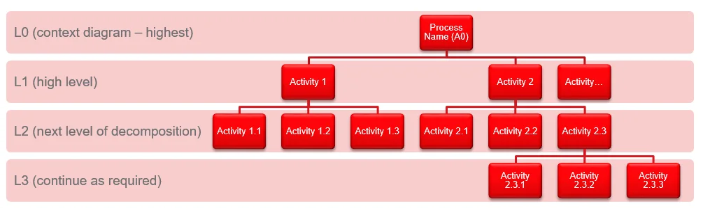
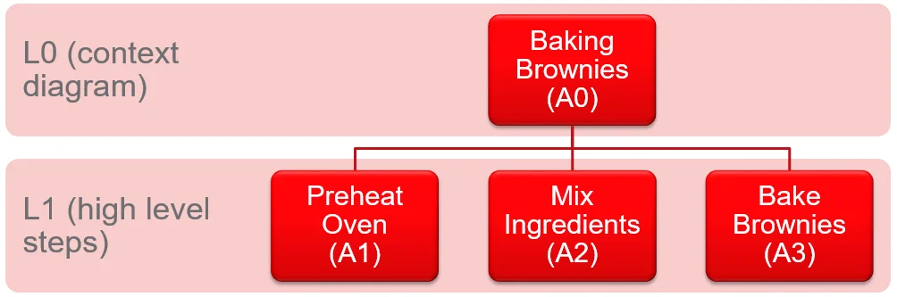
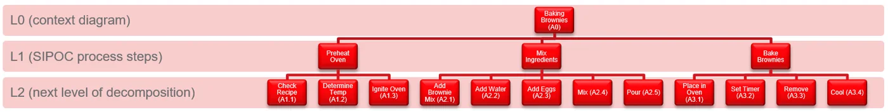

To see the forest and the trees, you develop the capability to step back and see the big picture, while simultaneously being able to zoom in and observe the trees. This series of articles will teach some practical things that will help you to cultivate this skill.
In Part I we introduced the Context Diagram, referred to as the Level 0 diagram, the highest view of the process. The context diagram is the broadest view of the forest. In Part II we will learn how to decompose the forest to begin to see the individual trees and understand how they fit into it. In IDEF0 terms, this is called building an Activity Node Tree.
We have the Context Diagram (L0). What's next?
In IDEF0 we use Activity Node Analysis to break down the Context Diagram's process (Level 0) into the activities that make up that process. We systematically decompose each activity until we get the level of understanding required by the process model's purpose and viewpoint.
The 3–6 Rule: When decomposing any process into its activities, each level should contain three to no more than six activities. If you identify more than six, roll them up at a higher level and articulate those additional details at a lower level of decomposition.
Using the paradigm of L0 as the highest level of decomposition: L1 represents the high level process, and L2 represents a lower level articulation of each activity. As a general best practice, taking each process down two levels of decomposition (L0 → L1 → L2) is normally sufficient. But sometimes it is necessary to go deeper.
For example, if the L2 decomposition of a specific activity requires more than six sub-activities, you might summarize it at L2 and decompose that particular activity further to L3. The Activity Node Tree graphic below illustrates this:

The Activity Node Tree, how L0 decomposes to L1, L2, and selectively to L3 when needed.
Once you get beyond L2, it is not necessary to decompose all activities to a deeper level. As shown above, we might only decompose Activity 2.3 more deeply, producing Activities A2.3.1, A2.3.2, and A2.3.3 at L3.
The numbering scheme always references the context:
Remember: only decompose to the level required by your purpose and viewpoint. The goal is clarity, not exhaustive documentation.
When might we need to go beyond L2?
Deeper decomposition becomes necessary when modeling end-to-end or full lifecycle processes. For example, if you are an organizational executive or a business transformation office trying to understand the critical activities associated with how your organization develops and delivers goods and services across several lines of business, starting with the first three levels (L0, L1, L2) is a great first step.
Then each line-of-business executive may choose to take their activities down to three levels of decomposition, and the functional leaders that report to them may do the same. Following this approach, it is possible to articulate a process through six or more levels of decomposition, with hundreds of activities identified, all of which roll up cleanly to the six to eight activities that make up the high level process at L1.
That is what it means to simultaneously see the forest and the trees: a complete, navigable view from the highest strategic context down to the operational detail.
Application: Baking Brownie Process
To help crystallize the concepts, let's apply Activity Node Analysis to the Baking Brownie process. In Part I we built a Level 0 Context Diagram for this process:

The L0 Context Diagram from Part I, our starting point for decomposition.
We are documenting this process from the viewpoint of the Baker. Now let's decompose the L0 Context Diagram into the high level activities that make up the process, the L1 level of detail.
When identifying activities, best practice is to use the formula verb + noun and to keep the language as simple as possible.
At L1, the high level steps are:

L0 → L1: the three high level activities of the Baking Brownies process.
Next, let's break each L1 activity into its L2 detail. What are the sub-steps within each high level activity?
- A1.1Check Recipe
- A1.2Determine Temp (adjust for oven performance)
- A1.3Ignite Oven
- A2.1Add Brownie Mix
- A2.2Add Water
- A2.3Add Eggs
- A2.4Mix
- A2.5Pour
- A3.1Place in Oven
- A3.2Set Timer
- A3.3Remove
- A3.4Cool
Our Activity Node Tree for the Baking Brownie process now looks like this, decomposed to L2:

The complete Activity Node Tree, L0 context, L1 high level activities, L2 sub-activities. The forest and the trees, in one view.
In Summary
Once you have identified the context (L0) and decomposed that process into two or more levels of decomposition (L1, L2, …), you are now beginning to see both the forest and the trees. You have a structured, navigable view of any process, from the highest strategic vantage point down to the operational detail that actually drives execution.
But there is more we can do to fully comprehend the interrelationships between the forest and the trees.
Do you remember the ICOMs, Inputs, Controls, Outputs, and Mechanisms, discussed in Part I? In Part III we will start to understand the role of each activity within the process by identifying the critical ICOMs for each activity at each level of decomposition. IDEF0 provides a powerful modeling diagram to illustrate these relationships, and Part III is where the method becomes a diagnostic tool, not just a documentation framework.